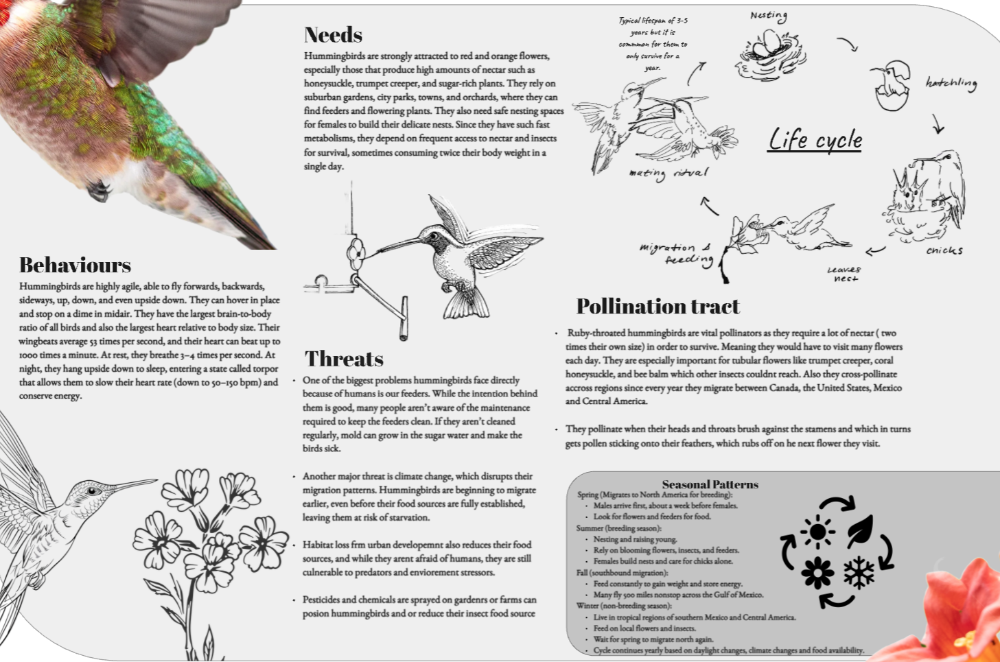
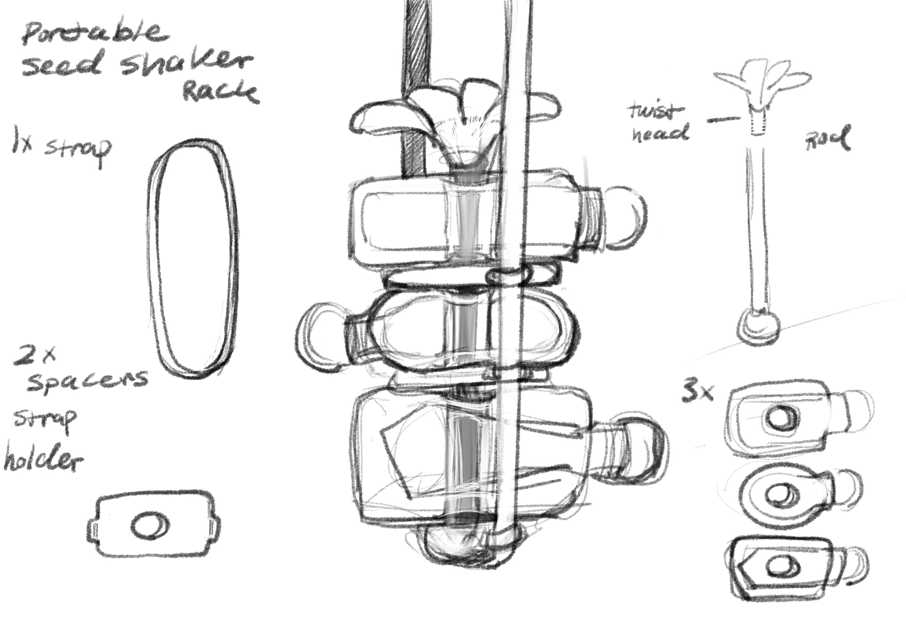
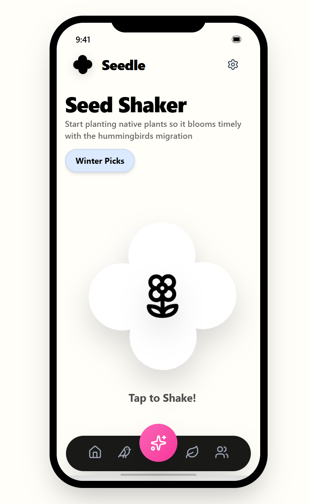
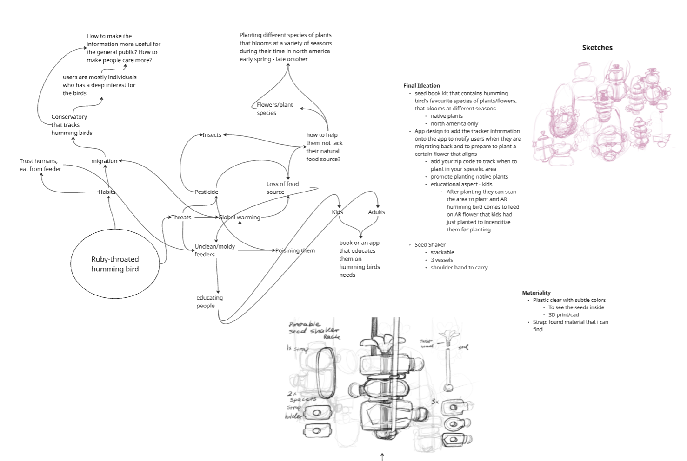
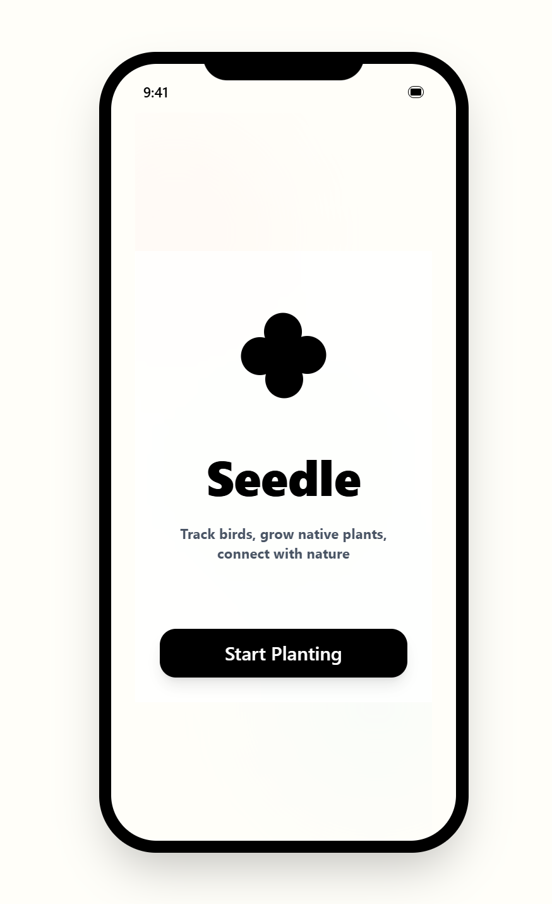
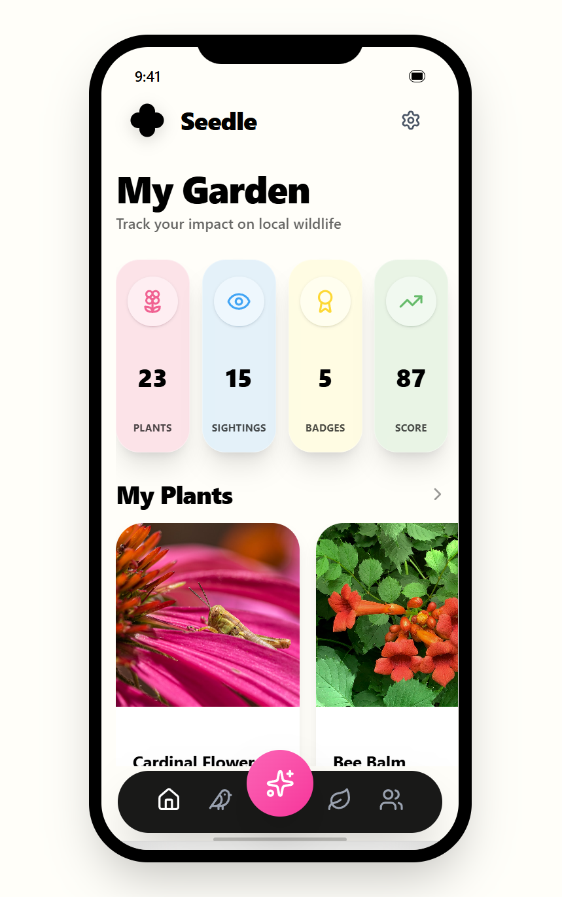
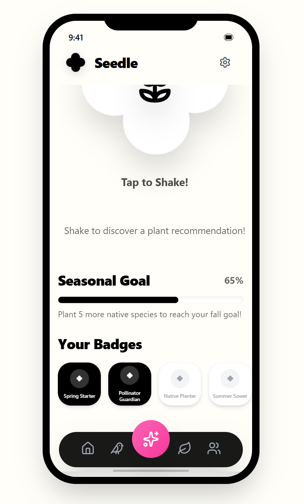
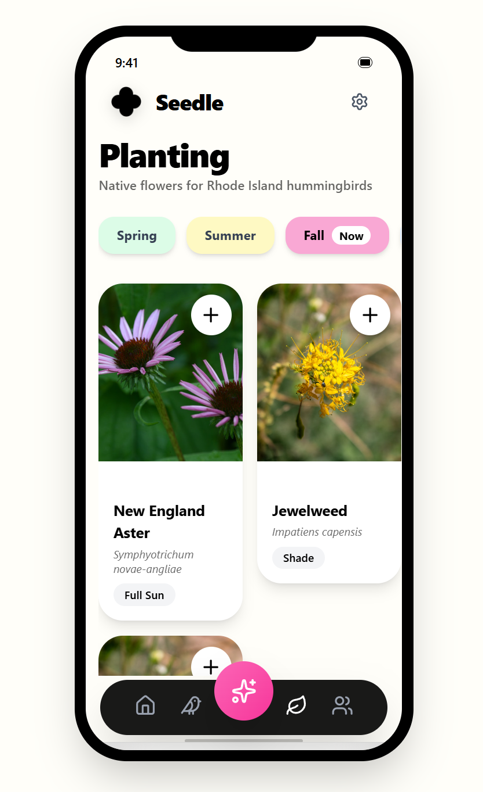
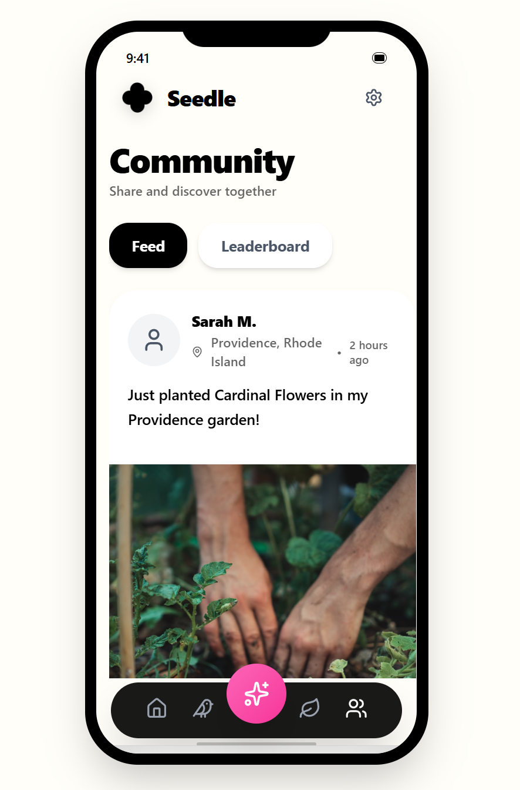
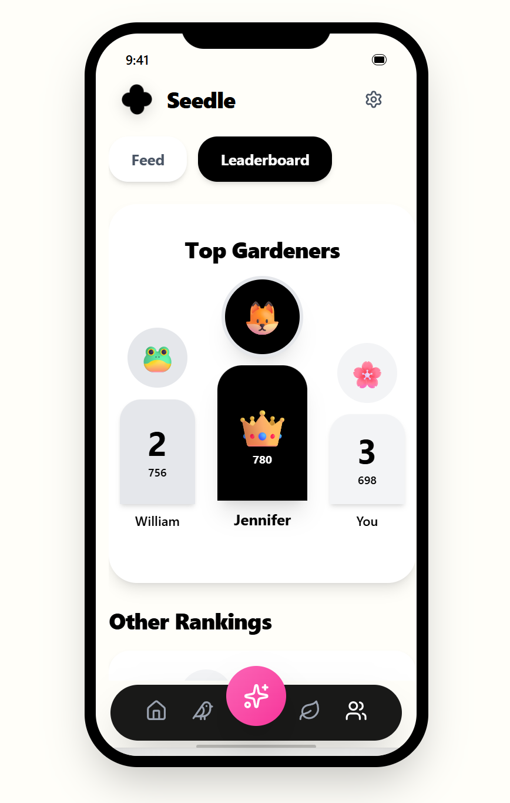

.PNG)


Interactive Experience Design
Featured at The Triennial Exhibition 2025 @ RISD
Seedle is a project focused on digital-physical interaction, exploring how we can plant seeds of creativity through simple, intuitive gestures. Developed over a week of intense prototyping, it represents a synthesis of technical skill and visual storytelling.
Hummingbirds is the subjects for this project. When doing research I leanred the reason for the declination of population in hummingbirds were mostly caused from global warming and human errors. Global warming causes the hummingbirds natural food resources to bloom too early, which by the time they migrate back to the east coast most natural foodsource are well gone, causing them to rely on bird feeders. This leads to a bigger disaster for the species since one, housecats are the leading cause of death for these species and two people arent cleaning their bird feeders causing a growth in mold and consumption of such can lead to dealthy illnesses.


My first thought was to re-design an easy to clean bird feeders, however i didnt believe tht it combsted the root issue which led to my question of how might we create a more engaging and educational experience for people to learn about hummingbirds and their ecological importance, while also promoting conservation efforts? When doign an ideation mind map the answer became clearer.


My final solution after creating midn maps and researching came to creating a versatile exerience where we combine both physical and digital elements to create a more engaging and educational experience for people to learn about hummingbirds and their ecological importance, while also promoting conservation efforts. Thus Seedle was born, a seed shaker that is paired with a companion app that allows users to track their plant growth, discover new species, and contribute to a community bloom map.


The companion app provides a window into the digital aspect of the mission of rebuilding our ecosystem. Users can manage their plant collection, virtually shake for suggested species to plant, observe & report bird spottings, and interact with the Seedle community all through their personal devices.











Seedle was featured at the RISD Industrial Design Triennial Exhibition.